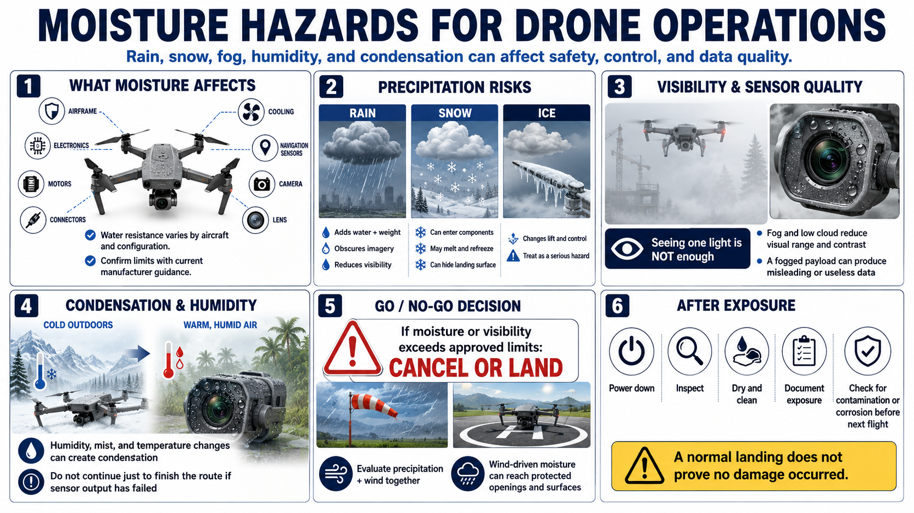

Rain, Snow, Fog, and Moisture
Connecting to LMS... Progress: in progress

Narration
Moisture can affect airframes, electronics, motors, connectors, cooling, navigation sensors, cameras, and lenses. Water resistance varies by aircraft and configuration and must be confirmed through current manufacturer guidance rather than assumed.
Rain adds water and weight, changes aerodynamic surfaces, obscures imagery, and reduces visibility. Snow can enter components, melt, refreeze, or hide the landing surface. Ice accumulation can change lift and control and should be treated as a serious hazard.
Fog and low cloud reduce visual range and contrast. Aircraft lights may remain visible while obstacles, terrain, other traffic, and the route are not. Maintaining sight of one light does not mean the operation remains safe or compliant.
Humidity, mist, and temperature transitions can create condensation on lenses or inside equipment. A fogged payload may produce misleading or useless data. Do not continue merely to complete a planned route when the sensor product has failed.
If precipitation, visibility, or moisture exceeds approved limits, cancel or land. Protect equipment during transport and recovery, and avoid opening sensitive compartments in blowing rain, snow, dust, or spray.
Wind-driven moisture can reach openings and surfaces that remain protected in calm conditions. Evaluate precipitation and airflow together rather than treating a light shower as an isolated factor.
After exposure, power down, inspect, dry, clean, and document the equipment according to approved procedures. Address contamination or corrosion concerns before another flight. A normal landing does not prove that moisture caused no damage.